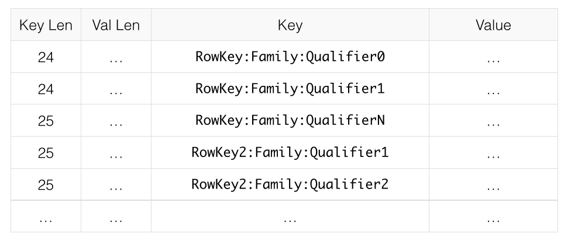

Compression 和 Data Block Encoding
概述
- 编码（
Data Block Encoding） 和 压缩（Compression） 的目的都通过一定的算法减少数据的大小，从而节省空间提升存储效率，时间换空间，即通过提高 CPU 的利用率来减少存储的消耗 - 编码（
Data Block Encoding） 主要针对 Key，即RowKey:Family:Qualifier:Timestamp - 压缩（
Compression）主要针对 Value，即 真实的数据 - 两者都是针对
Family进行设置，也可同时使用 - 写路径： Finish DataBlock –>
Encoding KVs–>Compress DataBlock–> Flush - 读路径： Read Block From Disk –>
DeCompress DataBlock–> Cache DataBlock –>Decoding Scan KVs - 如果变更 压缩 或 编码方式，不会立即生效，会在
compact（合并 HFile） 阶段生效
❤ 如何选择
如何选择 编码 和 压缩，取决于数据特征。通常需要在 更小的空间 和 更快的 编码/解压缩 之间权衡选择，一般压缩率越高则速度更慢，反之亦然，以下建议供参考：
- 如果 Key 占用空间较大，或者有很多个
Qualifier，建议开启FAST_DIFF编码- 如：
r00001:F:address:111111->0，Value 就一个数字或者几个字符
- 如：
- 如果 Value 很大，建议使用压缩
- 如：
r00001:F:c:111111->{name:'xx', info:{} }Value 是大段的文本
- 如：
- 如果存储的是很少的使用的 冷数据，可使用
gz，相对snappy或lzo虽然需要更多的 CPU 资源，但是压缩率更高 - 如果是经常访问的数据，则可选择
snappy或lzo； 如果判断不了冷热特征，那就选择snappy
以上建议来自于 官方文档 D.1. Which Compressor or Data Block Encoder To Use，可能会略显陈旧
可关注
zstd、lz4这些压缩算法
编码器
现有支持
package org.apache.hadoop.hbase.io.encoding;
// @since 2.1.0
public enum DataBlockEncoding {
NONE(0, null),
// id 1 is reserved for the BITSET algorithm to be added later
PREFIX(2, "org.apache.hadoop.hbase.io.encoding.PrefixKeyDeltaEncoder"),
DIFF(3, "org.apache.hadoop.hbase.io.encoding.DiffKeyDeltaEncoder"),
FAST_DIFF(4, "org.apache.hadoop.hbase.io.encoding.FastDiffDeltaEncoder"),
// id 5 is reserved for the COPY_KEY algorithm for benchmarking
// COPY_KEY(5, "org.apache.hadoop.hbase.io.encoding.CopyKeyDataBlockEncoder"),
// 没了
// PREFIX_TREE(6, "org.apache.hadoop.hbase.codec.prefixtree.PrefixTreeCodec"),
ROW_INDEX_V1(7, "org.apache.hadoop.hbase.io.encoding.RowIndexCodecV1");
}
算法简介
PREFIX
一般来说，同一个 Block 中的 Key ( KeyValue 中的 Key，不仅包含 RowKey，还包含 Family:Column )，都很相似．它们往往只是最后的几个字符不同．例如，KeyA 是 RowKey:Family:Qualifier0，跟它相邻的下一个KeyB可能是 RowKey:Family:Qualifier1．
如果相邻 Key 之间，完全没有共同点，那 PREFIX 显然毫无用处，还增加了额外的开销
在 PREFIX 会额外添加一列，表示当前 Key 和 它前一个 Key 相同的前缀的长度 PrefixLength，如下图对比
原始数据

编码后的数据

DIFF
DIFF 是对 PREFIX 的一种改良．它把 Key 看成多个部分，对每部分进行压缩，提高压缩率
DIFF会导致写数据，以及 Scan 数据更慢- 但是相对于
PREFIX/NONE，它会在 Block Cache 中缓存更多数据．

❤ FAST_DIFF
FAST_DIFF 跟 DIFF 非常相似，如果 Key 很长 或者 有很多Column，那么推荐使用 FAST_DIFF
PREFIX_TREE
Trie Tree 算法，新版好像废弃了
ROW_INDEX_V1
资料很少，从官方 Issues 找到了一些介绍资料： A new HFileBlock structure for fast random get
- which could improve random read (get) performance especially when the average record size (key-value size per row) is small
- Please note that if we turn this DBE on, HFile block will be bigger than NONE encoding because it adds some meta infos for binary search
从官方 Issues 的描述看出
ROW_INDEX_V1不是为了减小数据大小（编码后占用空间更大），而是为了提升搜索性能- HBase 的原始遍历方式是线性遍历，即从 StartRow 一直到 EndRow
ROW_INDEX_V1会在 DataBlock 头部添加一些 Index 信息，使其可进行 二分查找（binary search）- 提升 随机 Get 性能，对于大批数据的 Scan 操作可能并无提升效果
设置编码方式
# 创建
> create 'test', { NAME => 'F', DATA_BLOCK_ENCODING => 'FAST_DIFF' }
# 修改
> disable 'test';
> alter 'test', {NAME => 'F', DATA_BLOCK_ENCODING => 'ROW_INDEX_V1'}
> enable 'test';
> major_compact 'test';
压缩算法
支持的算法
package org.apache.hadoop.hbase.io.compress;
// @since 2.1.0
public final class Compression {
public static enum Algorithm {
NONE("none") { ... },
ZSTD("zstd") { ... },
LZ4("lz4") { ... },
SNAPPY("snappy") { ... },
GZ("gz") { ... },
BZIP2("bzip2") { ... },
LZO("lzo") { ... },
...
}
...
}
检查本地库
# 为 true 说明可用
$ hbase --config /hbase/conf org.apache.hadoop.util.NativeLibraryChecker
Native library checking:
hadoop: true
zlib: true
snappy: false
lz4: true
bzip2: false
openssl: false
测试算法是否可用
$ hbase org.apache.hadoop.hbase.util.CompressionTest /root/gz gz.
..
2020-03-22 13:04:58,453 INFO [main] compress.CodecPool: Got brand-new compressor [.gz]
2020-03-22 13:04:58,542 INFO [main] compress.CodecPool: Got brand-new compressor [.gz]
2020-03-22 13:04:58,755 INFO [main] compress.CodecPool: Got brand-new decompressor [.gz]
..
$ hbase org.apache.hadoop.hbase.util.CompressionTest /root/snappy snappy
..
Exception in thread "main" java.lang.RuntimeException: native snappy library not available: this version of libhadoop was built without snappy support.
..
❤ 压缩算法对比
压缩算法对比数据： https://help.aliyun.com/document_detail/59373.html
| 编码器 | 场景 | 传说 | 实现 |
|---|---|---|---|
| lz4 | 热 | 与 snappy/lzo 比 压缩率相差不多，但解压缩更快 |
o.a.h.i.compress.Lz4Codec |
| zstd | 冷 | 压缩率是 lz4 的一倍，速度是 lz4 的一半 |
o.a.h.i.compress.ZStandardCodec |
| gz | 冷 | 相比 snappy、lzo 压缩率更高，但 CPU 消耗的也更多 |
o.a.h.i.compress.GzipCodec |
| snappy | 热 | 压缩率没有 gz 高，但是 CPU 消耗更少 | o.a.h.i.compress.SnappyCodec |
| bzip2 | 冷 | 比 gz 压缩率高，单速度更慢 |
o.a.h.i.compress.BZip2Codec |
| 热 | 可使用 snappy 代替 |
com.hadoop.compression.lzo.LzoCodec |
设置压缩方式
# 创建
> create 'test', { NAME => 'F', COMPRESSION => 'lz4' }
# 修改
> disable 'test';
> alter 'test', {NAME => 'F', COMPRESSION => 'gz'}
> enable 'test';
> major_compact 'test';
测试压缩性能
帮助
$ hbase org.apache.hadoop.hbase.util.LoadTestTool -h
usage: hbase org.apache.hadoop.hbase.util.LoadTestTool <options>
Options:
-v,--verbose 显示详细日志
-zk <arg> ❤ Zookeeper 地址
-zk_root <arg> name of parent znode in zookeeper
-tn <arg> ❤ 测试读写的表名
-families <arg> 列族名，多个用逗号分割
-write <arg> ❤ <avg_cols_per_key>:<avg_data_size>[:<#threads=20>]
-read <arg> ❤ <verify_percent>[:<#threads=20>]
-update <arg> ❤ <update_percent>[:<#threads=20>][:<#whether to ignore nonce collisions=0>]
-init_only ❤ 仅初始化表，不做压测
-bloom <arg> 布隆过滤器类型 [NONE, ROW, ROWCOL]
-compression <arg> ❤ 压缩算法 [LZO, GZ, NONE, SNAPPY, LZ4, BZIP2, ZSTD]
-data_block_encoding <arg> ❤ 编码算法 [NONE, PREFIX, DIFF, FAST_DIFF, ROW_INDEX_V1].
-max_read_errors <arg> 允许的最大读取错误数.默认 10.
-multiget_batchsize <arg> 是否对每一行的多列使用 multi-gets 而不是 get
-key_window <arg> The 'key window' to maintain between reads and writes for concurrent write/read workload. The default is 0.
-multiput 是否使用 multi-puts 而不是 put
-batchupdate 是否使用批量更新
-in_memory inmemory 模式
-generator <arg> 自定义数据生成器的类
-writer <arg> 执行写入的 Class
-updater <arg> 执行更新的 Class
-reader <arg> 执行读取的 Class
-num_keys <arg> ❤ 读写 RowKey 的数量
-start_key <arg> StartKey. 默认 0.
-skip_init ❤ 跳过初始化，适合测试表已经存在的情况
-num_tables <arg> ❤ 指定 正整数 n，测试程序将并行加载 n 个表，-tn 参数变为表名的前缀，表名变为 tn_1/tn_1/tn_../tn_n
-encryption <arg> 传输加密，可选值 [AES]
-deferredlogflush Enable deferred log flush.
-num_regions_per_server <arg> 每个 region server 的 regions 个数. 默认 5.
-region_replication <arg> region 的副本数
-region_replica_id <arg> Region replica id to do the reads from
-mob_threshold <arg> 超过指定的字节将启用 MOB 写路径
示例
# -write <avg_cols_per_key>:<avg_data_size>[:<#threads=20>]
# -num_keys 读写 RowKey 的数量
# -read <verify_percent>[:<#threads=20>]
# -num_tables 指定 正整数 n，测试程序将并行加载 n 个表，-tn 参数变为表名的前缀，表名变为 tn_1/tn_1/tn_../tn_n
# -data_block_encoding 编码算法 [NONE, PREFIX, DIFF, FAST_DIFF, ROW_INDEX_V1].
# -tn 测试读写的表名
$ hbase org.apache.hadoop.hbase.util.LoadTestTool \
-write 1:10:100 \
-num_keys 1000000 \
-read 100:30 \
-num_tables 1 \
-data_block_encoding NONE \
-tn load_test_table_name
Read More
- Apache HBase ™ Reference Guide
- HBase最佳实践 > 数据压缩与编码
- HBase Data Block Encoding Types 介绍
 Mar 22, 2020
Mar 22, 2020
 Edit this page
Edit this page